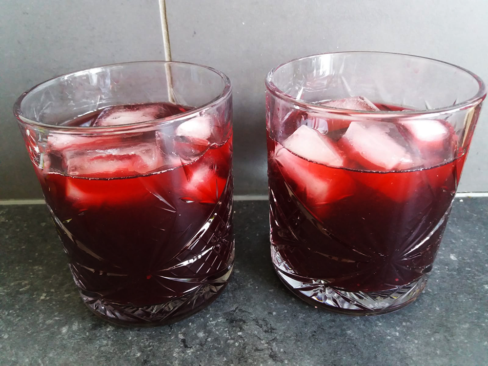

black cherry kiss cocktail
kersensap over? Dit is het ideale drankje wat je ermee kunt maken.

Bereidingsduur: 10 minuten
Aantal personen: 2
Ingrediënten:
300 milliliter kersensap
20 milliliter citroensap
30 milliliter vodka
20 milliliter amaretto
naar wens ijs
schijfje citroen
300 milliliter kersensap
20 milliliter citroensap
30 milliliter vodka
20 milliliter amaretto
naar wens ijs
schijfje citroen
Instructies:
1. Meng de kersensap, citroensap, vodka en amaretto door elkaar en doe in een cocktailglas.
2. Doe er ijs bij en garneer eventueel met een schijfje limoen.
1. Meng de kersensap, citroensap, vodka en amaretto door elkaar en doe in een cocktailglas.
2. Doe er ijs bij en garneer eventueel met een schijfje limoen.